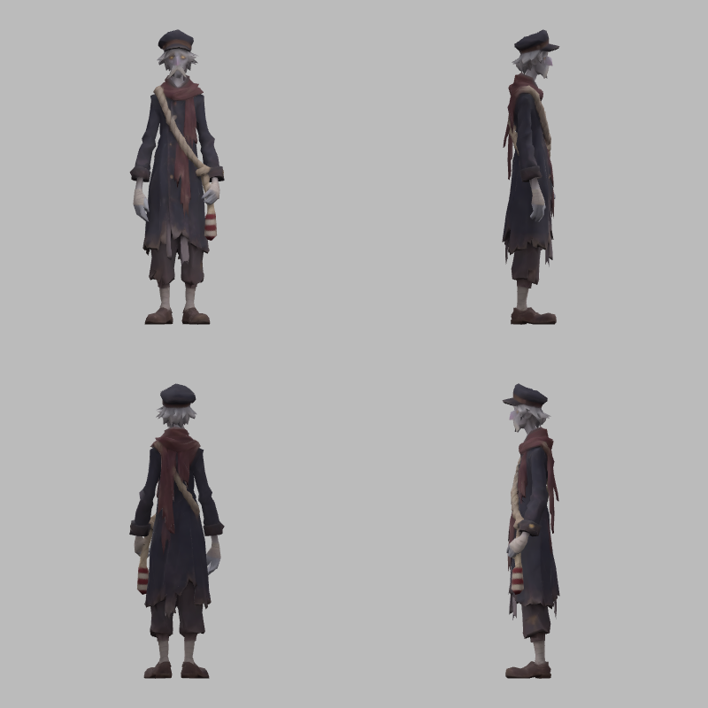

The Still Spire's battering ram: your export, with a skeleton and eight moves added by hand. A dead bell-ringer still tangled in its belfry rope. It creeps hunched, keeping 3 to 6 u from you; then it grips the rope and leans back while an Ember lane fills from it through you, swings down that lane on the rope, strikes you once in passing and throws you aside, dangles at the far end, lets go and creeps again. The hunch, the lean back, the swing's arc and the dangle use the game's numbers frame for frame. Pick a move, drag to turn it, and judge it. Nothing in the game has changed.
Idle or Creep sets what it does between swings, and Going turns it on the spot. Swing plays the game's whole attack against the hero stand-in 4 u ahead (the grip while the lane fills, the swing, the dangle, the let-go) and repeats until you press it again; the floor slides under it as it swings, so it stays in the middle of the stage. Hurt plays on top of anything. Death drops it: press it again and it spawns back. The bar names the part of the move that is playing, in the game's own words.

It came through whole, as one piece: a gaunt grey bell-ringer in a long ragged coat, a flat cap and a red scarf, a rope slung from the right shoulder across the chest, and the rope's striped sally hanging from the left hand. The arms are fused to the coat down their length, so they cannot lift clear of it without tearing the sleeves; see the open choices.
| Move | What it does | Timing |
|---|---|---|
| Idle | The game's creep pose standing: hunched, the head hanging, swaying on its feet, the arms swinging loose. Mine on top: the head lolls one way, then the other. | Game: hunch 0.42, neck 0.55, sway 0.08 at 1.2 rad/s (a 5.23 s loop). |
| Creep | A slow hunched shuffle, the arms swinging, the rope swaying slack above it. | Game: 1.25 u/s. The stride is mine: a step every 0.25 s. |
| Turn left, turn right | Shuffles round on the spot, the head leading. | 90° a second (mine: the game turns it at once). |
| Swing | The game's attack, whole. It grips and leans back on the rope, braced, the left foot stepping forward and the right back, while the lane fills toward you; the rope leans ahead and goes taut. Then it swings down the lane on the rope, its body pendulum-swinging about the hips from leaning forward to leaning back, lifted off the floor, the legs trailing; it strikes you as it passes and you are thrown 2 u aside. At the far end it dangles, slack, turning on the rope with its head hanging, then lets go, its feet come down, and it creeps again. | Game: the grip and lane 66 ticks; the swing at 10 u/s down 8.5 u (0.85 s), the strike as it reaches you; the dangle 45 ticks; the let-go 0.45 s. The poses are the game's: lean back 0.4, the pendulum 0.75 to −0.4, lift 0.12 + 0.38 sin, legs trailing 0.55 + 0.25 sin, the dangle's turn 0.9 sin. |
| Hurt | The upper body jolts back and the head snaps up. Plays on top of any move. | 0.4 s |
| Spawn | Grows in bent low, then straightens into its hunch on the rope. | Game: grow in 7 frames, about 10% over. The rest is mine. |
| Death | Struck, it jolts back; the rope lets go above it and drops in a heap. Its knees give, it sags, the head drops, and it topples forward onto its face and lies flat, arms at its sides. | Mine: 2.2 s, then it stays down. The game pops every foe where it is; the falling rope is the game's death effect. |
| What was measured, on every frame of every move | Result |
|---|---|
| Planted feet that slide (idle, creep, both turns, the grip and the let-go) | 0 mm |
| Loops that jump when they restart (idle, creep, both turns) | 0 |
| Feet sinking into the floor | 2 mm at worst |
| Lying dead | On the floor, not in it: its lowest point measured on every frame of the fall (2 mm at worst). |
These numbers come from the model file. I checked the poses as still frames only: the cloud machine cannot play the page at full speed, so the swing's arc, the dangle and the fall are yours to judge.